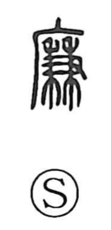

廉

Uncategorized
Kun: yasui | On: ren
integrity ・ uprightness ・ corner ・ inexpensive
Explanation
廉 is a phono-semantic character with 兼 as its phonetic, which signals the on-yomi ren and belongs to a group where an earlier k- element drops in Sino-Japanese; similar patterns are seen with graphs built on 監 and 各 that yield ran and raku. The Shuowen glosses it as “to incline,” from which the sense of a slanted edge or “corner” arose; out of the idea of holding firmly to the corner developed the moral meaning of straight, incorrupt conduct, as in 廉直. In 清廉 the nuance of “pure, free of selfish desire” is a borrowed extension from a homophonous word meaning “clear.” The character also came to mean “inexpensive,” as in 廉価.